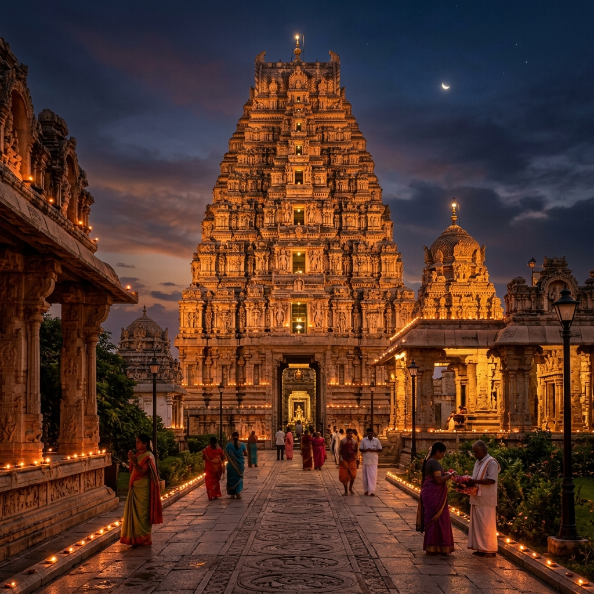
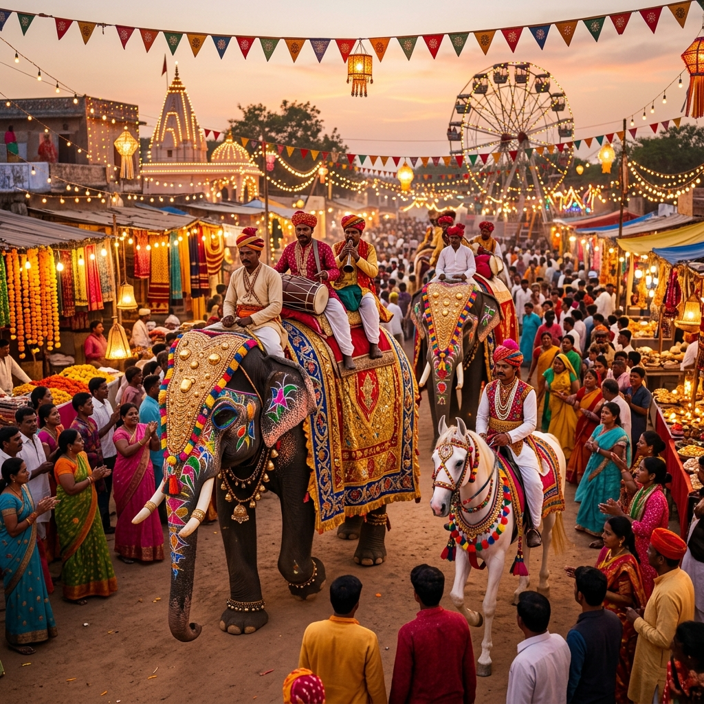

Discover the temples, traditions and culture that make Sonepur a spiritual epicentre.

Sonepur sits where the Gandak river meets the Ganges, a confluence held sacred for centuries. The Harihar Nath temple here honours a single deity representing both Vishnu ("Hari") and Shiva ("Har"), a rare combined form that draws pilgrims from across Bihar and beyond.
The ghats along the confluence are busiest at sunrise, when boats carry pilgrims out for a ritual bath at the meeting point of the two rivers.

Held every year around Kartik Purnima, Sonepur Mela is one of Asia's oldest and largest cattle fairs, historically a month-long gathering where traders brought elephants, horses, cattle and camels from across the region. Today it combines livestock trading with a large mela ground of stalls, handicrafts, folk performances and a circus.
It remains one of the biggest annual boosts to the local economy, drawing traders and visitors from well beyond Bihar.
About 35 km from Sonepur lies Vaishali, one of the earliest known republics in recorded history and a major Buddhist pilgrimage site. Gautam Buddha delivered his last sermon here, and the ancient Ashoka Pillar, topped with a lion capital, still stands at the site.
Vaishali is a natural add-on to a Sonepur visit, and a proposed airport would put both places within easy reach for pilgrims and history travellers arriving from further afield.
Sonepur lies just across the Gandak from Hajipur, on NH-19, and is about 25 km from Patna. The Sonepur–Chhapra stretch of NH-19 connects it directly to the region's main highway network.
Once the proposed Sonepur airport is built, these same routes would connect visitors straight from the runway to the ghats, the Mela grounds and on to Vaishali.
See the airport's Special Area, Core Area and connecting roads on our own interactive planning map.
Open the Planning Map